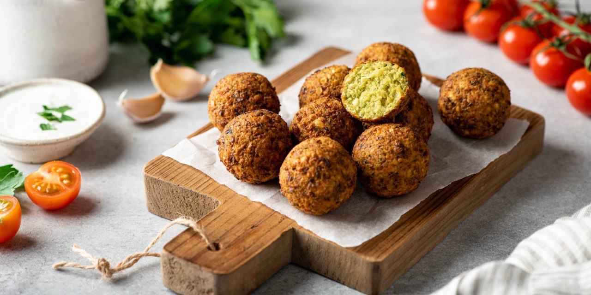

приготовление:
-
Залить водой 250 г сухого нута и оставить на ночь. По возможности несколько раз поменять воду. Перед приготовлением воду слить.
-
Очистить 1 луковицу и 2 зубчика чеснока, промыть примерно по 15 г кинзы и петрушки. Сложить нут, лук, чеснок и зелень в кухонный комбайн с насадкой-ножом и измельчить до относительно однородной массы.
-
Добавить 1 ч. л. молотого кориандра, 1 ч. л. соли, 0,5 ч. л. паприки, 0,5 ч. л. куркумы, 2 ч. л. молотого кумина и 2 ст. л. кунжута. Тщательно перемешать.
-
Налить 1 л подсолнечного масла в кастрюлю с толстым дном и хорошо разогреть. На индукционной плите подойдёт режим 8 из 10.
-
Пока масло нагревается, сформировать плотные шарики диаметром около 3,5 см и выложить их на плёнку или доску.
-
Опустить в масло один фалафель для проверки температуры. Если масло сразу зашипит, а шарик примерно через 2 минуты всплывёт, можно жарить остальные. Если фалафель рассыпается, масло, скорее всего, недостаточно горячее.
-
Жарить фалафель партиями примерно по 7–8 штук около 5 минут, чтобы масло не успевало сильно остыть. Готовый фалафель перекладывать на бумажное полотенце.
-
Полностью остудить оставшееся масло. Его можно процедить в бутылку и использовать ещё раз либо перелить в закрывающуюся ёмкость и выбросить вместе с бытовым мусором. Не выливать масло в раковину.